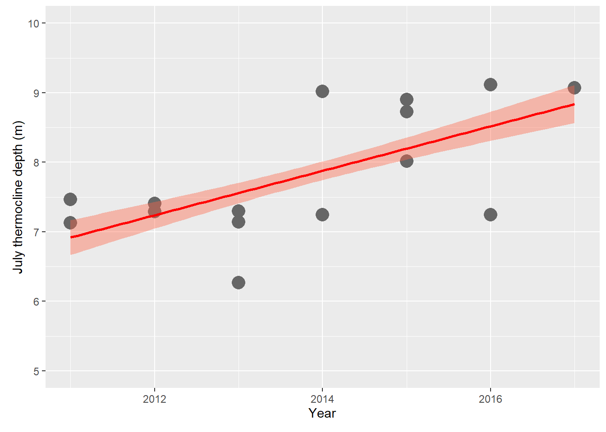

Below, we run through a quick example of slightly more complex data manipulation and application of some plots outside of the base graphics to analyze summer thermocline depth in Otsego Lake, NY during the past several years.
# Data formatting & extraction
limnos$date <- as.POSIXct(limnos$date, format = "%m/%d/%Y")
limnos$year <- year(limnos$date)
limnos$day <- yday(limnos$date)
limnos$month <- month(limnos$date)
# Remove rows with NA to make life easier for now
limnos <- na.omit(limnos)
# Create a list of dataframes split by date
# so each date corresponds to a df that is an
# element of the list
limlist <- split(limnos, list(limnos$date))If you just have a single dataframe, you can pass the appropriate columns straight to the thermo.depth function in rLakeAnalyzer. But, we are looking to calculate thermocline depth for 114 different datasets. To make this easier, we pack them in a list (above) and then use lapply to apply the thermo.depth function to each element of the list. But, the thermo.depth function was not designed for this specifically, so we will first write a function that can be applied to a list, with a short name.
# Create a function to calculate thermocline
# depth that can be applied to a list as long
# as depth is in the 5th column and temperature
# is in the 6th column of each list element (matrix
# or dataframe). This function creates a new
# variable (column) called 'thermo' in each df,
# and returns the original object modified in
# place.
ltd <- function(x) {
x$thermo <- rLakeAnalyzer::thermo.depth(x[, 6], x[, 5])
return(x)
}Now we can use the function we made to apply across all elements of our list.
Once we’ve done that, we can put everything back into a single dataframe.
Now we can plot changes in thermocline depth and fit statistical models to describe this change. We have fit regression models for this purpose already today, so here is an example of a slick plot of the result from the ggplot2 library.
First, subset the data so we are just working with July data.
# Make a plot of July thermocline depth
# across years, and include predictions from
# a GAM for data viz.
# First, subset the data
out1 <- out[out$month == 7, ]Next, fit the plot. Note the differences between the ggplot2 code and the code we have used thus far for plotting. You can do a lot more out of the box with ggplot graphics, but it is a bit of a different application of the R language compared to what we have seen so far. There is less flexibility than using basic graphics, too, but new features seem to be added all the time.
# Now, plot it with ggplot2 functions
plot <- ggplot(out1, aes(year, thermo)) +
geom_point(pch = 21, cex = 5, col = "gray40", bg = "gray40") +
geom_smooth(
method = "gam", level = .999,
col = "red", bg = "tomato"
) +
xlab("Year") +
xlim(2011, 2017) +
ylab("July thermocline depth (m)") +
ylim(5, 10)
plot + theme(plot.margin = margin(5, 5, 10, 10))
This work is licensed under a Creative Commons Attribution 4.0 International License. Data are provided for educational purposes only unless otherwise noted.